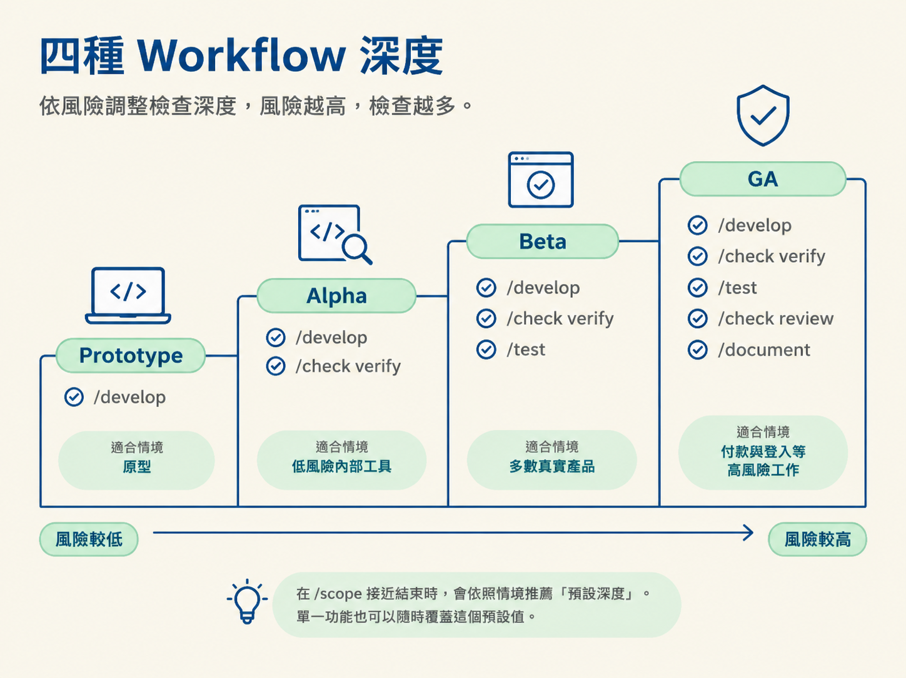
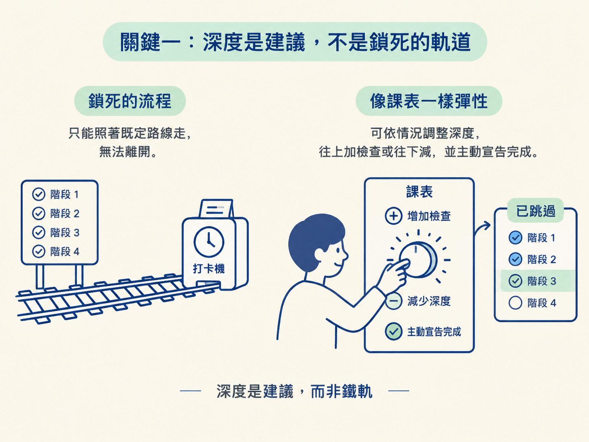
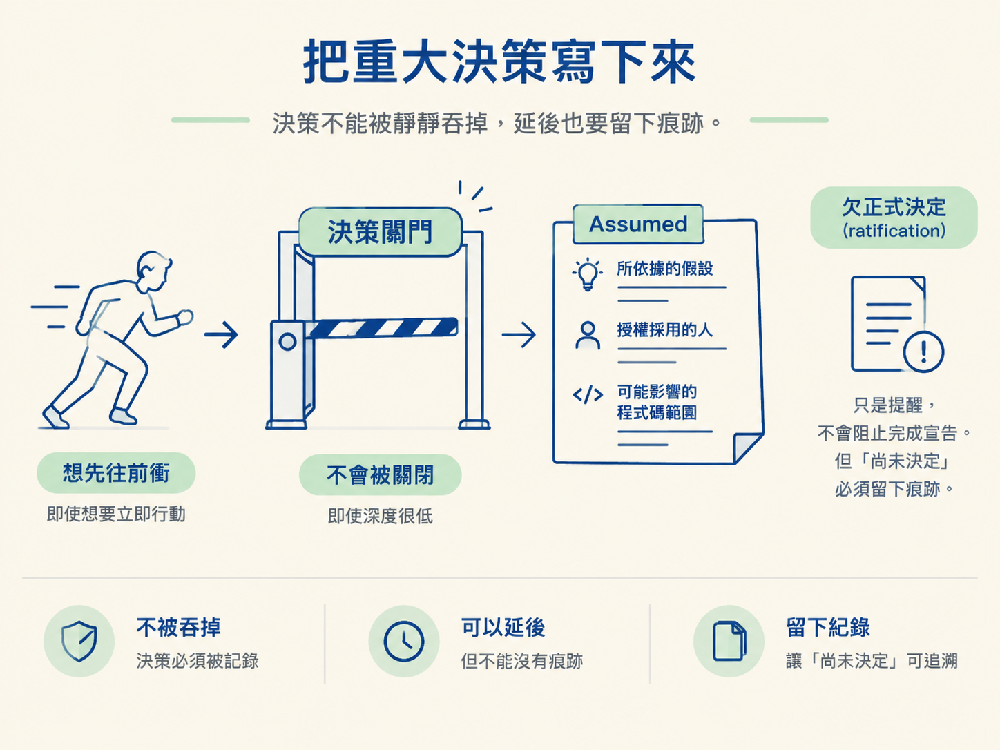

完成這一節後，你應該能依照情境判斷哪些階段值得跑、哪些可以跳過；也能說明 Prototype、Alpha、Beta、GA 四種深度各自包含哪些步驟，並分辨「建議的檢查尾巴」和唯一的硬性要求：重大決策必須留下書面紀錄。
上一節把九階段的地圖攤開，也點出最重要的一句規則：只跑這個改動需要的階段。但如果沒有判斷準則，這句話其實還不夠用。
你可能會掉進兩個極端。第一種是每一件小事都照九站跑一遍，流程完整了，自己卻先累倒；第二種是乾脆全部跳過，最後連當初做過哪些決定都說不清楚。
這一節補上的，就是判斷「這次要跑到哪裡」的尺。它有兩部分：會隨專案或功能調整的四種 workflow depth，以及「建議不是閘門」這條規則。
你可以把四種深度想成醫療處置：小擦傷貼一個 OK 繃就夠了，重大手術才需要第二意見和完整病歷。風險不同，值得投入的檢查也不同。
在 /scope 接近結束時，流程會根據你描述的情境，推薦一個「預設深度」。它代表這個專案平常預計跑多少驗證。不過，單一功能隨時可以覆蓋這個預設值。

| 深度 | /develop 之後跑什麼 | 適合什麼 |
|---|---|---|
| Prototype | 只跑 /develop，除此之外沒有其他階段 | 丟棄式原型、實驗、個人專案 |
| Alpha | 再跑 /check verify | 低風險功能、希望被實際證明的內部工具 |
| Beta | 再跑 /check verify 與 /test | 大多數真實產品 |
| GA | 再加上 /check review 與 /document | 付款、登入、合規等高風險工作，以及團隊共用的 codebase |
Prototype 是最輕的一級。它只跑 /develop，之後沒有獨立檢查。你依靠的是 develop 自己的建置期自檢，再加上自己的眼睛確認結果。
因為一開始就選擇跳過獨立驗證，所以當功能完成、develop 的自檢也通過時，流程會直接把它標記為完成。這適合隨時可以丟掉的原型或實驗，不適合把它誤當成正式產品的完整保證。
Alpha 在 /develop 之後加上 /check verify。這一步會讓功能在實際運作的 app 上被證明一次，通過後才標記完成。
Alpha 沒有獨立的測試套件，也沒有第二雙眼睛，除非某個功能另外要求這些檢查。它適合低風險、但你仍想看到實際證明的功能，例如內部工具。
Beta 在驗證之外再加上 /test。驗證跑完後，測試會把功能的重要行為固定下來，功能才算收尾。
這一級預設不做換模型的審查。對大多數認真的產品來說，Beta 是很合理的預設值：它比單純確認「現在能跑」更進一步，也不會一開始就背上完整 GA 流程的成本。
GA 是最完整的一級。/develop 之後，依序跑 /check verify、/test、/check review，由另一個模型進行審查，最後再跑 /document。
到了這一級，多數功能會被視為需要一份 spec。凡是碰到金錢、登入、合規，或是在多人共用的 codebase 裡修改程式，通常都適合用 GA 的標準處理。
四種深度最容易被誤解的地方，是把它想成一條選定後就不能離開的軌道。其實它只是「建議的檢查尾巴」，也就是建議你跑哪些檢查，以及在什麼時機把功能視為完成。
你可以跑得比建議多，也可以跑得比建議少。done 永遠由你宣告，不是某個 skill 扣著不放，直到所有欄位都打勾才讓你通過。
如果你跳過一個原本建議執行的階段，流程會誠實地把它記成「已跳過」，而不是假裝這個階段從未存在。反過來，如果某個功能風險特別高，你想直接用 GA 等級對待它，也完全可以。
因此，深度的作用是幫後續階段拿捏力道。它告訴其他 skill：「這個專案平常不需要被逼著跑完整條鏈。」它比較像課表，而不是打卡機。

有一個重要但書：降低深度，不代表可以跳過 /architect。在任何深度下，只要某個功能涉及尚未決定的重大選擇，流程仍會把你導向 /architect，先把決策做出來。
那為什麼低深度看起來很少出現 /architect？原因不是它被關掉，而是低風險功能本來就很少需要重大決策。因此，你只是比較少走到那一站。
一旦功能牽涉需要拍板的事情，閘門仍然會出現。低深度不是拆掉閘門，而是讓你在不需要閘門的路段不用反覆停車。
整套流程裡，唯一稱得上硬性要求的事情只有一件：會影響後續工作的重大決策，必須寫成一份 spec。目的很單純——不要讓重要決定憑空消失在對話裡。
不過，這個要求也不是用強制阻擋的方式執行。假設 /develop 發現某個決策還沒做，而你仍想先往下衝，它不會默默替你猜答案。相反地，它會把這個假設寫成一份標記為 Assumed 的小 spec。
這份 spec 會記下它建立在什麼假設上、是誰授權採用這個假設，以及可能影響哪些程式碼。功能之後會一直被標記為「欠一個正式決定（ratification）」，但這個標記不會阻止你宣告完成。它更像一張貼在螢幕邊緣的提醒：等你有空時，再回頭把這個決策正式想清楚。
/develop 遇到缺少決策時，通常會給你三個選項：
/architect 把決策做好，再回來繼續；這是推薦路徑。Assumed spec。這三個選項的共同點是：決定不能被靜靜吞掉。你可以延後決定，但必須讓「尚未決定」這件事本身留下痕跡。

把深度和決策閘門放回真實情境，你會發現很多改動其實不需要長流程。
遇到一個明確的 bug，可以直接交給 /debug，不必先規劃，也不必先寫 spec。遇到很小的改動，可能只需要跑 /develop，接著跑 /check verify。
真正該問的不是「九站有沒有全部跑完」，而是「這次改動的風險，需不需要那些站」。
四種深度是依風險調整的檢查尾巴：Prototype 只有/develop，Alpha 加上/check verify，Beta 再加上/test，GA 則再加上/check review與/document。它們是建議，不是鎖定的軌道；done永遠由你宣告，跳過的階段也會被誠實記錄。調整深度不會關掉決策閘門：任何深度下，需要重大決策的功能仍會導向/architect。整套流程唯一的要求，是讓重大決策留下書面紀錄；即使先用Assumedspec 往下做，也要把假設、授權者與影響範圍記下來。
現在你已經知道「要跑哪些」，下一個實務問題就是「從哪裡進」。全新的專案、已經運作好幾年的 codebase，或是一個 monorepo，起跑順序其實不一樣。下一步會處理這三種入口，也會一起看清楚 /debug 迴圈。